01. Git y GitHub
En este apartado aprenderemos a subir un proyecto a git y github haciendo uso de la consola de comandos git bash Este proceso consta de 3 partes importantes git repositorio github
01. Git bash here y la carpeta contenedor
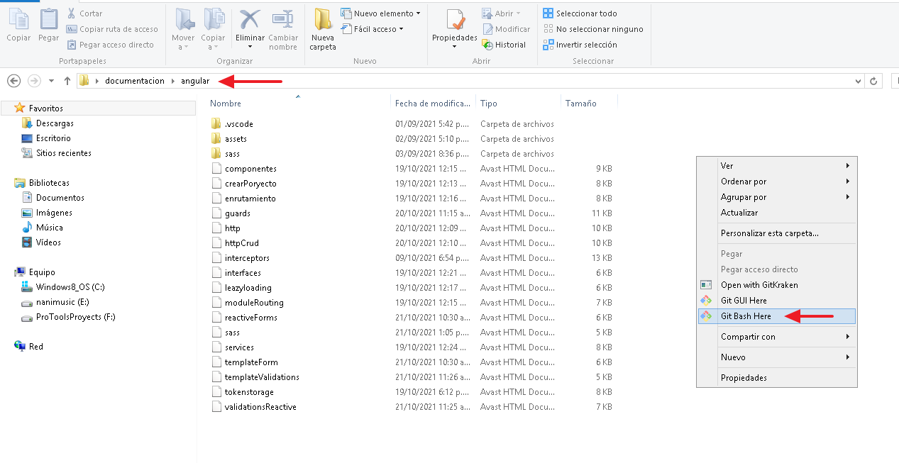
02. Git init: Iniciando con git
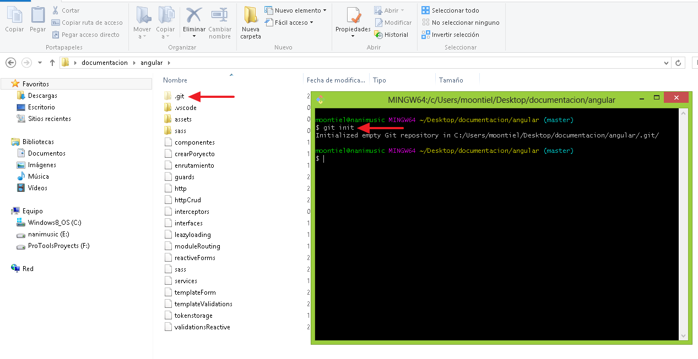
03. Git status: Conociendo el estado de subida
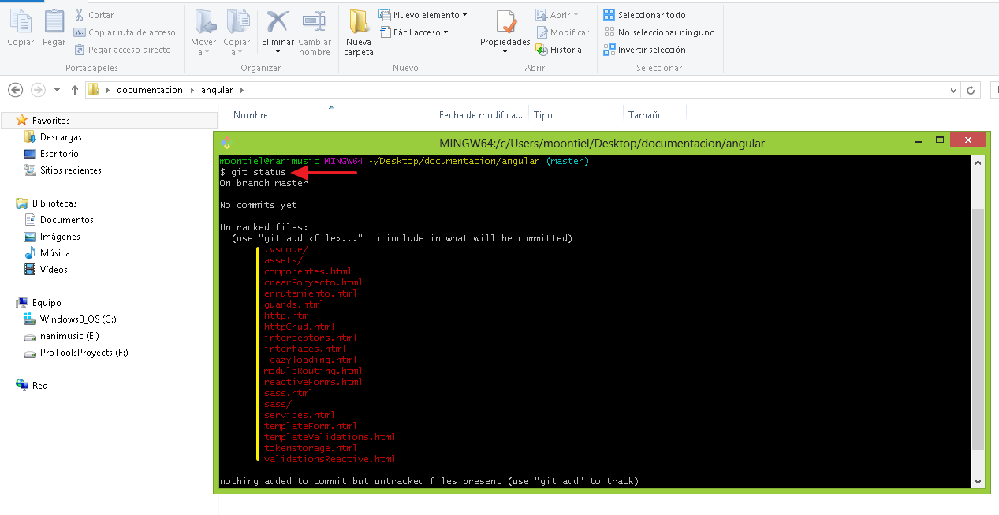
04. Git add .: Añadiendo los archivos a git
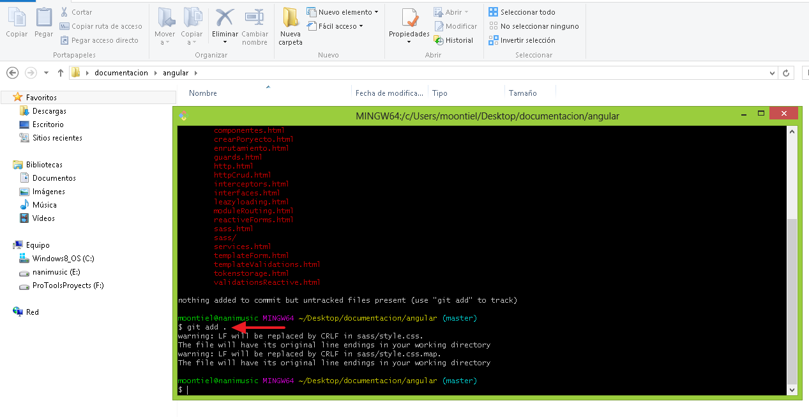
05. Git commit -m "cambio": Definiendo el commit de subida
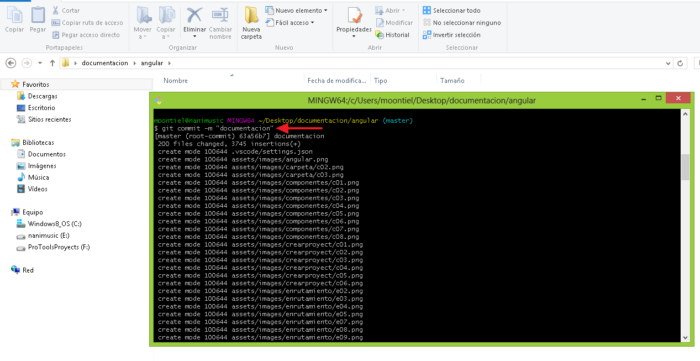
-------------------- End --------------------
01. Ingresando a github
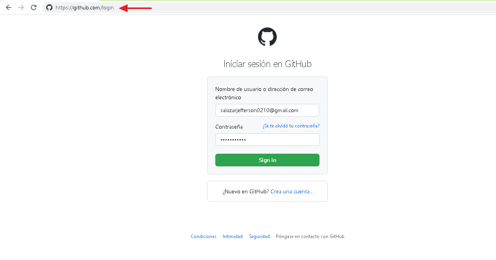
02. Abriendo panel de proyectos
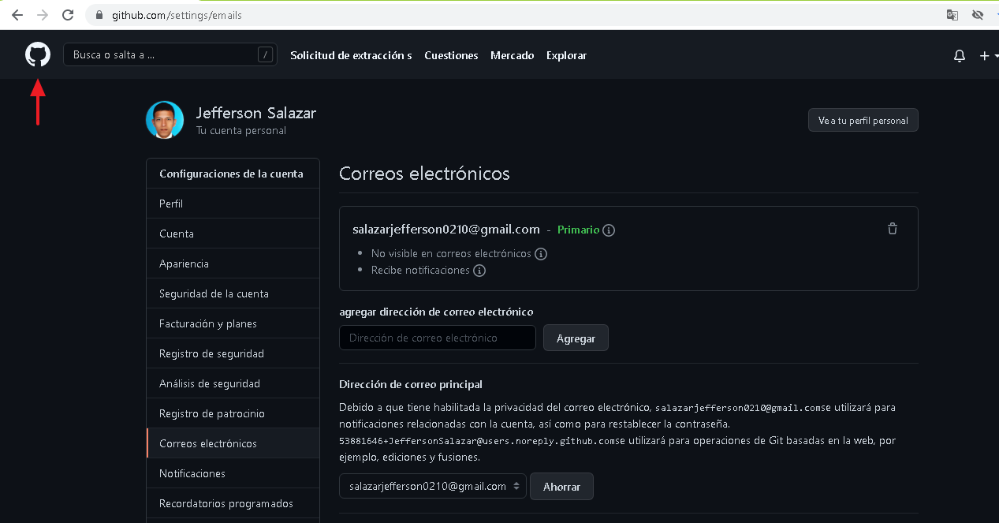
03. Creando un nuevo repositorio
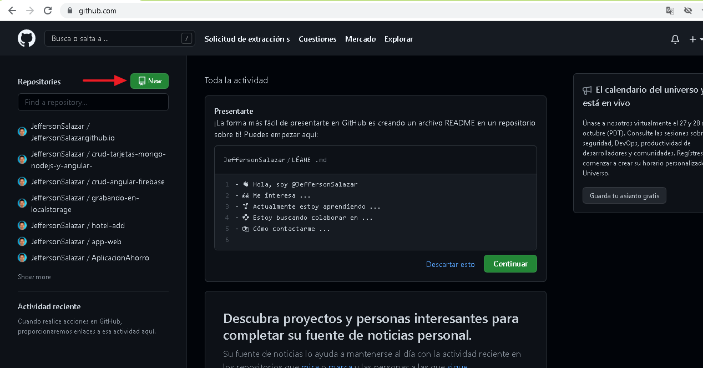
04. Nombre del repositorio
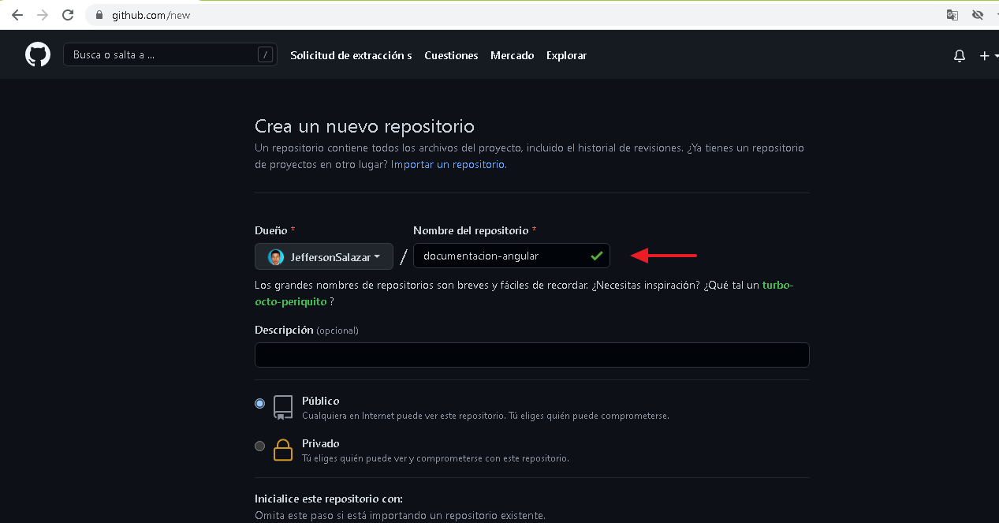
05. Url del repositorio
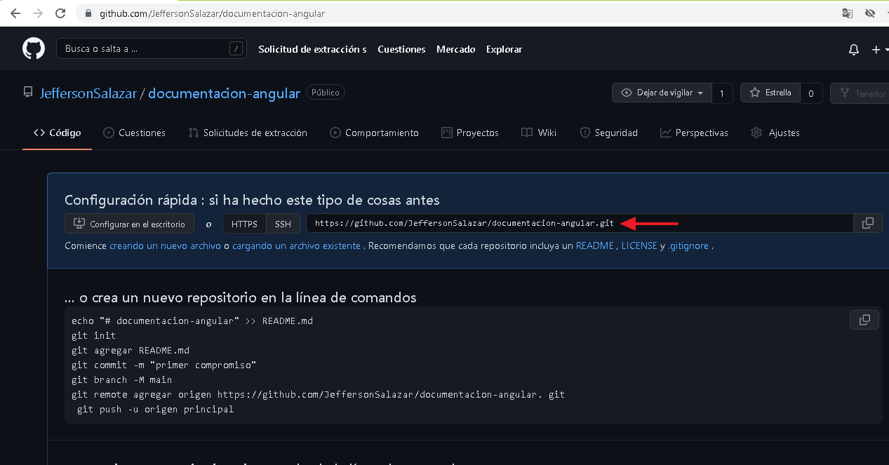
-------------------- End --------------------
01. Git remote add origin + url: Conectando git y github
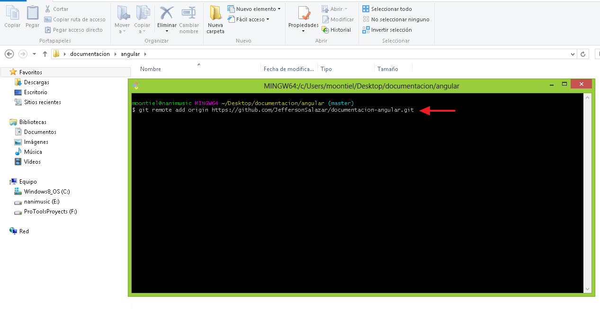
02. Git push origin "nombre rama": Subiendo los archivos
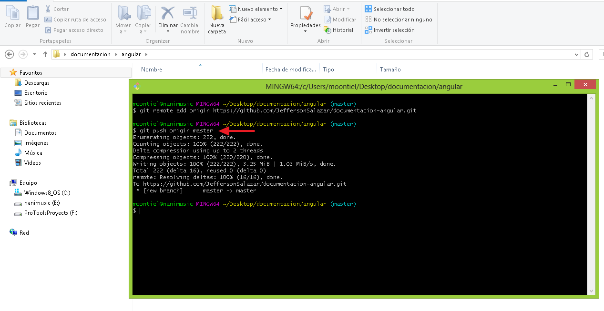
03. Repositorio creado exitosamente
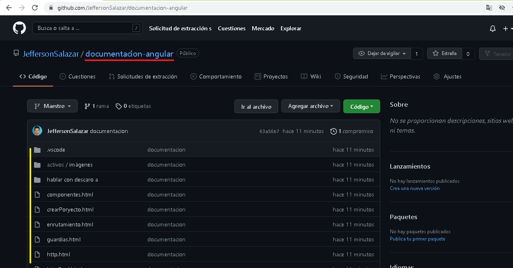
End add file github